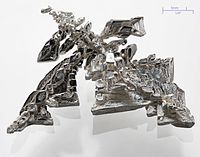

Numero atomico: 47
Massa atomica: 107,9
Temperatura di fusione (°C): 962
Temperatura di ebollizione (°C): 2162
Energia di prima ionizzazione (kj/mol): 731
Elettronegatività (secondo Pauling): 1,93
Densità: 10,5
Numeri di ossidazione: +1
Configurazione elettronica: 1s2, 2s2, 2p6, 3s2, 3p6, 3d10, 4s2, 4p6, 4d10, 5s1
Maggiori Informazioni